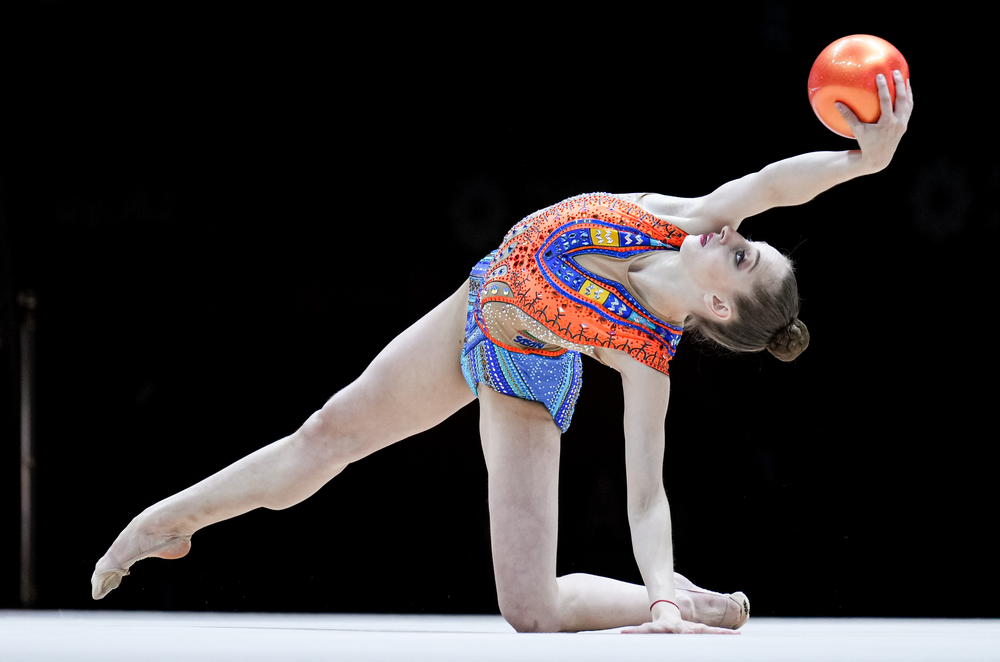

What is Rhythmic Gymnastics?
Rhythmic gymnastics is a mainly female Olympic sport that is a mix of Ballet, dance, and acrobatics with 5 apparatuses.

Apparatuses
- Rope
- Ball
- Hoop
- Clubs
- Ribbon
Individual and Groups
You can be an individual gymnast performing separate routines with multiple apparatuses.
Or you can be in a group of five performing two routines together.
Levels
There are different levels you can be in but it depends on your age and
whether you are in the International/National Elite Stream or the
Regional/Provincial Development Program.
For the International/National Elite Stream, there are four categories:
Novice/ Aspire the age (Ages 10-11), Pre-Junior (Ages 12-13), Junior FIG (Ages 14-15),
and Senior FIG/Olympic Level (Ages 16+).
For the Regional/Provincial Development program, there are Levels 1-2
(Pre-Competitive), levels 3-4 (Beginner Competitive), levels 5-6
(Intermediate Competitive), levels 7-8 (Advanced Development).